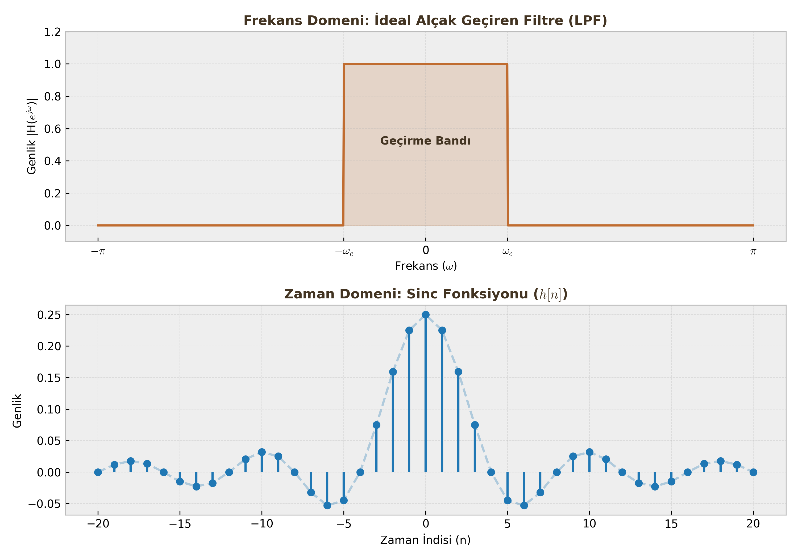

Fourier Analizi ve Frekans Cevabı
Final sınavlarının kalbi burasıdır. Şimdiye kadar sinyalleri zaman domeninde ($n$) inceledik. Şimdi ise frekans domenine ($\omega$) geçiyoruz. Bu analiz, sinyalin içinde hangi frekansların (bas sesler, tiz sesler) olduğunu ve sistemin bunlara nasıl tepki verdiğini görmemizi sağlar.
1. Frekans Cevabı (Frequency Response - $H(e^{j\omega})$)
Tanım: Kararlı bir LSI sisteme sinüzoidal bir giriş ($e^{j\omega n}$) uygulandığında, çıkış sinyali girişin frekansını değiştirmez, sadece genliğini ve fazını değiştirir. Sistemim bu değişim karakteristiğine Frekans Cevabı denir.
$$H(e^{j\omega}) = \text{Sistemin Frekans Karakteristiği}$$
A. Hesaplama Yöntemleri
Sınavda size sistem iki şekilde verilebilir, ikisinden de $H(e^{j\omega})$'yı bulabilmelisiniz:
1. Dürtü Cevabından ($h[n]$) Geçiş: Eğer $h[n]$ verildiyse, DTFT (Ayrık Zamanlı Fourier Dönüşümü) formülü kullanılır: $$H(e^{j\omega}) = \sum_{n=-\infty}^{\infty} h[n] e^{-j\omega n}$$
2. Fark Denklemminden (LCCDE) Doğrudan Yazma (Pratik Yol): Verilen fark denkleminde $y[n-k]$ yerine $e^{-j\omega k}$ koyarak hızlıca yazabilirsiniz. Denklem: $\sum a_k y[n-k] = \sum b_k x[n-k]$ ise;
$$H(e^{j\omega}) = \frac{Y(e^{j\omega})}{X(e^{j\omega})} = \frac{\sum b_k e^{-j\omega k}}{\sum a_k e^{-j\omega k}}$$
Örnek: $y[n] - 0.5y[n-1] = x[n] + 2x[n-1]$ $$H(e^{j\omega}) = \frac{1 + 2e^{-j\omega}}{1 - 0.5e^{-j\omega}}$$
B. Genlik ve Faz Tepkisi
Frekans cevabı karmaşık (complex) bir sayıdır. Bunu analiz etmek için iki parçaya ayırırız:
- Genlik Cevabı ($|H(e^{j\omega})|$): Sistemin hangi frekansları kuvvetlendirip (kazanç), hangilerini zayıflattığını gösterir.
- Faz Cevabı ($\angle H(e^{j\omega})$): Sistemin sinyali ne kadar geciktirdiğini gösterir.
$$H(e^{j\omega}) = |H(e^{j\omega})| \cdot e^{j\angle H(e^{j\omega})}$$
2. Ayrık Zamanlı Fourier Dönüşümü (DTFT)
Herhangi bir $x[n]$ sinyalini frekans domenine taşımak için kullanılır.
Analiz ve Sentez Denklemleri
| İşlem | Formül | Açıklama |
|---|---|---|
| Analiz (DTFT) | $X(e^{j\omega}) = \sum_{n=-\infty}^{\infty} x[n]e^{-j\omega n}$ | Zaman $\to$ Frekans |
| Sentez (Ters DTFT) | $x[n] = \frac{1}{2\pi} \int_{-\pi}^{\pi} X(e^{j\omega})e^{j\omega n} d\omega$ | Frekans $\to$ Zaman |
Kritik Sınav Bilgisi
Ayrık zamanlı sinyallerin spektrumu (DTFT sonucu), $2\pi$ periyotla tekrarlanır. Yani $X(e^{j\omega})$ fonksiyonu periyodiktir. Genellikle sadece $-\pi$ ile $\pi$ arasına (Temel Aralık) bakmak yeterlidir.
Temel Özellikler
Sınav sorularını çözerken uzun uzun integral almak yerine bu özellikleri kullanın:
- Doğrusallık: $a x_1[n] + b x_2[n] \longleftrightarrow a X_1(e^{j\omega}) + b X_2(e^{j\omega})$
- Zaman Kaydırma (Time Shifting): Sinyali zamanda kaydırmak, frekans spektrumunun genliğini değiştirmez, sadece fazını değiştirir. $$x[n-n_0] \longleftrightarrow e^{-j\omega n_0} X(e^{j\omega})$$
- Konvolüsyon Teoremi (EN ÖNEMLİSİ): Zaman domenindeki o zorlu konvolüsyon işlemi, frekans domeninde basit bir çarpma işlemine dönüşür. $$y[n] = x[n] * h[n] \longleftrightarrow Y(e^{j\omega}) = X(e^{j\omega}) \cdot H(e^{j\omega})$$
3. İdeal Filtreler ve Pratik Analiz
Filtreler, frekans cevabının şekline göre isimlendirilir.
İdeal Alçak Geçiren Filtre (Low-Pass Filter - LPF)
- Frekans Domeni: Belirli bir kesim frekansına ($\omega_c$) kadar genlik 1, sonrasında 0'dır (Dikdörtgen şekli).
-
Zaman Domeni: Frekanstaki dikdörtgenin ters dönüşümü Sinc fonksiyonudur. $$h_{LP}[n] = \frac{\sin(\omega_c n)}{\pi n}$$

Öğrenci Notu
İdeal filtreler nedensel değildir (sonsuz uzunluktadır ve geleceğe uzanır), bu yüzden fiziksel olarak gerçekleştirilemezler. Pratikte bunlara yaklaşan (IIR/FIR) filtreler tasarlarız.
Pratik Analiz: "Bu Sistem Hangi Filtredir?"
Sınavda size bir $H(e^{j\omega})$ denklemi verilip "Bu ne tür bir filtredir?" diye sorulursa şu testi uygulayın:
- $\omega = 0$ (DC Bileşen) koy: Sonuç büyükse (örn: 1), alçak frekansları geçiriyordur.
- $\omega = \pi$ (En Yüksek Frekans) koy: Sonuç küçükse (örn: 0), yüksek frekansları öldürüyordur.
Örnek: $y[n] = \frac{x[n] + x[n-1]}{2}$ (Hareketli Ortalamalar) * Frekans cevabı: $H(e^{j\omega}) = \frac{1 + e^{-j\omega}}{2}$ * $\omega = 0$ için: $H(e^{j0}) = \frac{1+1}{2} = 1$ (Geçiriyor) * $\omega = \pi$ için: $H(e^{j\pi}) = \frac{1-1}{2} = 0$ (Yok ediyor) * Sonuç: Alçak Geçiren Filtre (Low-Pass).
4. Sistem Bağlantıları ve Blok Diyagram Okuma
Karmaşık sistemler genellikle alt sistemlerin birleşimidir. Fourier domeninde analiz yapmak çok kolaydır.
1. Seri Bağlantı (Cascade): İki sistem peş peşe bağlanmıştır. $$H_{toplam}(e^{j\omega}) = H_1(e^{j\omega}) \cdot H_2(e^{j\omega})$$
2. Paralel Bağlantı: Giriş aynı anda iki sisteme gider, çıkışlar toplanır. $$H_{toplam}(e^{j\omega}) = H_1(e^{j\omega}) + H_2(e^{j\omega})$$
3. Geri Beslemeli (Feedback) Bağlantı: Sistemin çıkışı bir katsayıyla çarpılıp girişe geri döner. $$H_{toplam}(e^{j\omega}) = \frac{H_1(e^{j\omega})}{1 \mp H_1(e^{j\omega})H_2(e^{j\omega})}$$ (Paydadaki işaret: Negatif geri besleme ise $+$, Pozitif ise $-$ olur).